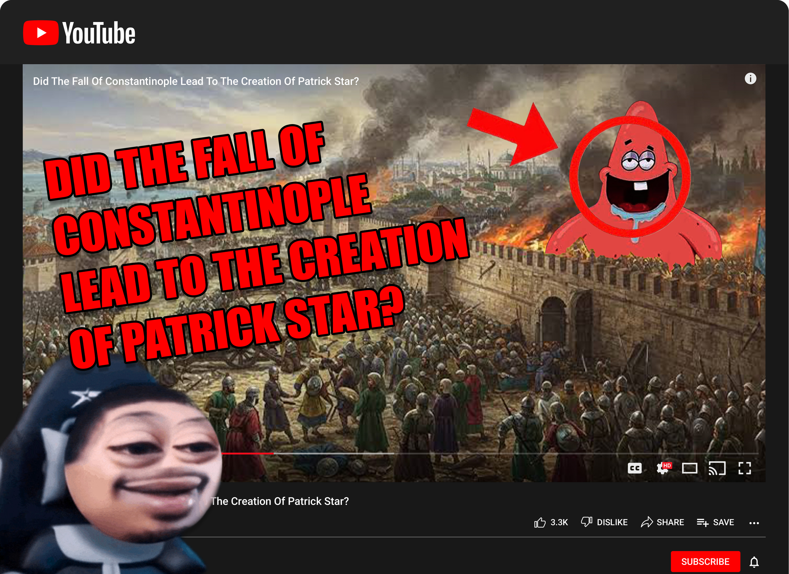

My piece, Reacting to an Educational Video, shows a Flightreacts (floating circle-headed character) reacting to an absurd YouTube video about how the fall of Constantinople led to the creation of Patrick Star. I combined historical events with familiar memes to imitate the style of modern YouTube thumbnails, which have become memes themselves.
